| Parte | O que este PDF mostra | Pontos |
|---|---|---|
| O problema | quem é o cidadão, a dor, os números e os ODS | |
| Área 1, IA e automação | a IA aplicada, o prompt e as regras, entrada e saída, o antes e depois | 4 |
| Área 2, Big Data e visualização | as camadas, a ingestão, o painel e as medidas DAX | 4 |
| Área 3, MVP, IoT e experiência digital | as telas, os sensores, o fluxo completo e a arquitetura | 4 |
| Área 4, DevOps, segurança e qualidade | Git, Docker e CI, segurança e o plano de testes | 3 |
| Uso de IA e créditos | o que foi usado para construir, quem fez o quê |
Quem é o cidadão: o agricultor familiar de hortaliças (alface, couve, tomate), com 1 a 5 hectares, que irriga com bomba elétrica e não tem técnico por perto. A persona é o Seu Jorge, 54 anos, 2 ha de folhosas em Ibiúna (SP), celular Android e sinal fraco na roça. Ele rega todo dia no mesmo horário, 30 minutos, "porque sempre foi assim".
A dor: ele decide quando e quanto irrigar no hábito, sem saber a umidade do solo nem se vai chover. Em dia úmido, gasta água e energia à toa; no calor, a folhosa murcha e perde valor. A doença nas folhas aparece tarde, e geada ou calor chegam sem aviso.
| Dado | Fonte |
|---|---|
| 77% dos estabelecimentos rurais do Brasil são de agricultura familiar (3.897.408) | IBGE, Censo Agropecuário 2017 |
| Só cerca de 1 em cada 5 recebe orientação técnica, um índice parado há mais de 20 anos: 19,5% em 1995/96, 22,1% em 2006 e 20,2% em 2017 | IBGE, Atlas do Espaço Rural Brasileiro |
| A irrigação responde por 50,5% da água retirada no Brasil | ANA, Conjuntura dos Recursos Hídricos 2023 |
A solução: sensores no canteiro (umidade do solo, temperatura e luz), a previsão do tempo e uma IA viram um aviso curto para o produtor: regar ou não, quantos minutos, e se vem doença, geada ou calor. Ele responde "1 fiz / 2 não fiz", e o técnico da Emater ou da cooperativa acompanha tudo num painel por comunidade.
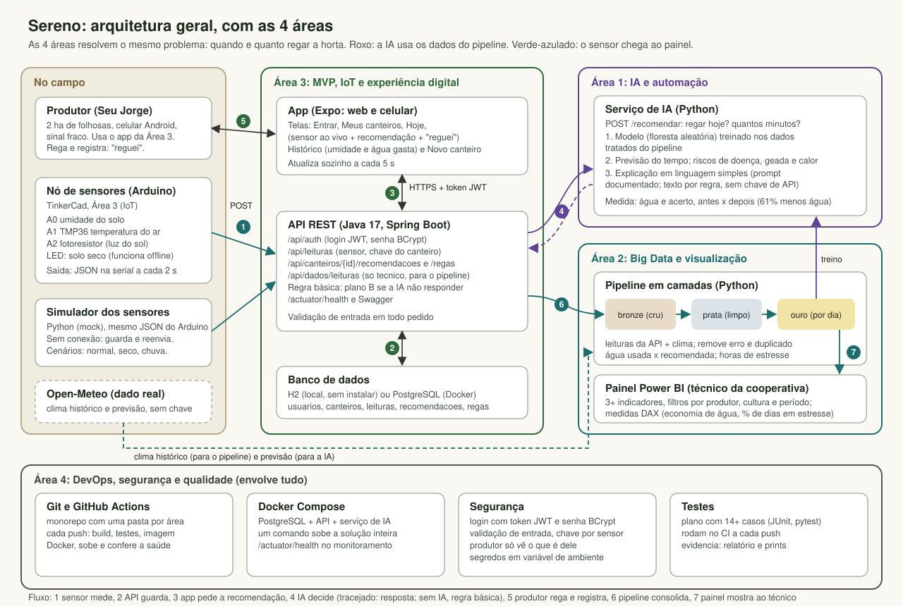
Código em area1-ia/. A IA responde todo dia, para cada canteiro: regar hoje? quantos minutos? vem doença, geada ou calor? E diz isso em linguagem simples, pronta para o WhatsApp.
treinar.py): floresta aleatória do scikit-learn, treinada com a camada prata da Área 2. Ele prevê quanto a umidade do solo vai mudar nas próximas 24 h se ninguém regar, olhando o sensor agora, a previsão do tempo (chuva, a água que o sol e o vento tiram do solo, máxima e umidade do ar) e a cultura.decisao.py): se a umidade prevista para amanhã fica abaixo do mínimo da cultura mais 3 pontos de folga, regar hoje, com a quantidade que leva o solo ao mínimo mais 10 pontos.servico.py): a API em Java chama POST /recomendar; a IA busca a previsão do Open-Meteo e responde. Sem previsão, decide pelo sensor e diz isso; se a IA cair, a API usa a regra básica, e o produtor nunca fica sem resposta.| Medida, nos 80 exemplos de teste que o modelo nunca viu | Erro médio em 24 h (pontos de umidade) |
|---|---|
| Supor que nada muda | 5,06 |
| Modelo (floresta aleatória), R² 0,83 | 1,77 |
| Gabarito: a fórmula do próprio simulador | 1,17 |
Treina nos primeiros 42 dias e mede nos 18 últimos. O que mais pesa: a chuva prevista (53%), a umidade de agora (34%) e a água que o sol tira (7%).
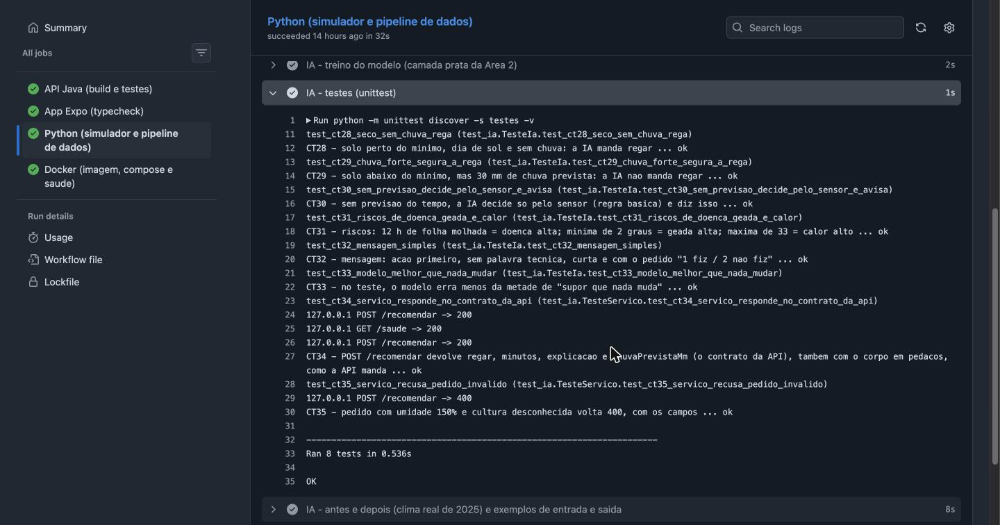
Documento completo em area1-ia/prompts/mensagem-ao-produtor.md. No MVP, o texto sai de mensagem.py, que segue estas regras sem chamar um modelo de linguagem: sem chave, sem custo e com a mesma saída para a mesma entrada, o que deixa testar (CT32). O prompt está pronto para trocar a regra por um modelo de linguagem, com a mesma entrada.
Você escreve avisos de rega e de clima para pequenos produtores rurais do Brasil, que leem pouco e recebem a mensagem no WhatsApp ou por SMS. Escreva em português simples, como um vizinho que entende de roça. Regras: 1. A primeira frase é a ação: "Regue N minutos hoje, no fim da tarde (cerca de L litros)." ou "Não precisa regar hoje." Se a chuva prevista der conta, diga isso na mesma frase. 2. A segunda frase diz o porquê, com no máximo dois números, arredondados (umidade do solo agora e a prevista para amanhã), e o mínimo da cultura. 3. Se houver risco médio ou alto (doença nas folhas, geada ou calor), uma frase com o dia e o que fazer: olhar as folhas de baixo e regar no pé; cobrir as mudas; regar no fim da tarde. Só o risco mais grave. 4. Não use palavra técnica: nada de "evapotranspiração", "modelo", "IA", "umidade relativa", "precipitação". Diga "chuva", "sol", "tempo úmido". 5. No máximo 3 frases. Sem travessão e sem emoji. 6. Termine com: "Responda 1 se fez ou 2 se não fez." 7. Use só os dados da entrada. Não invente número nem previsão.
Regras dos riscos (risco.py), nos próximos 3 dias, com os mesmos limites do painel da Área 2:
| Risco | Regra | Médio | Alto |
|---|---|---|---|
| Doença nas folhas (ferrugem, míldio) | horas no dia com o ar a 95% ou mais e de 15 a 25 °C (folha molhada) | 6 h | 10 h |
| Geada | temperatura mínima | 6 °C ou menos | 3 °C ou menos |
| Calor | temperatura máxima | 30 °C ou mais | 32 °C ou mais |
python demo.py escolhe três manhãs reais de 2025 e mostra o que entra e o que sai; os JSON completos ficam em area1-ia/exemplos/. O CI roda a demonstração a cada push:
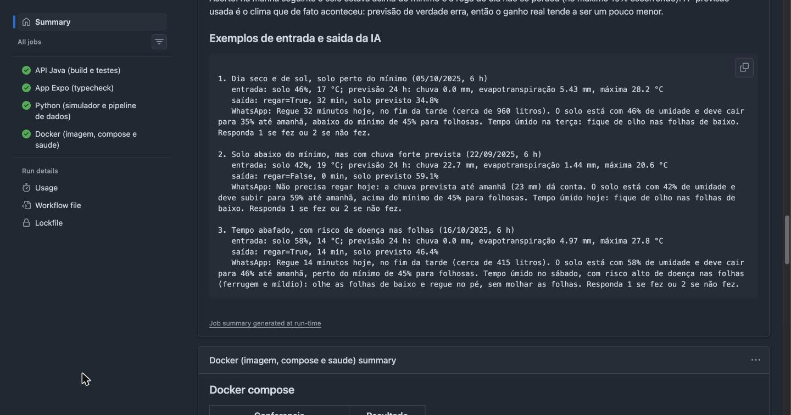
python avaliar.py roda os 7 canteiros por 60 dias com o clima real de Ibiúna de 01/09 a 30/10/2025, período que o modelo nunca viu:
| Jeito de regar | Água (L) | Economia contra o calendário | Água perdida (L) | Horas com o solo abaixo do mínimo | Acerto do alerta |
|---|---|---|---|---|---|
| Antes: calendário (30 min por dia) | 279.000 | 0,0% | 146.535 | 0 | |
| Regra básica (só o sensor) | 109.915 | 60,6% | 9.379 | 4.967 | 49,9% |
| Depois: IA (sensor e previsão) | 108.065 | 61,3% | 3.413 | 581 | 98,3% |
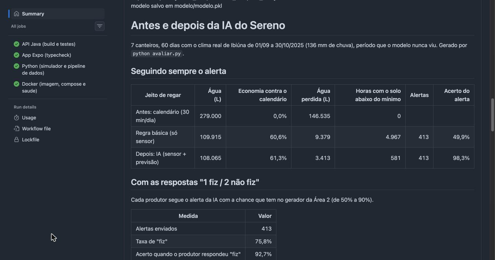
python avaliar.py a cada push.Código em area2-dados/. A leitura do sensor e a resposta do produtor saem da API, juntam-se ao clima real de Ibiúna e viram, em três camadas, os indicadores do painel do técnico.
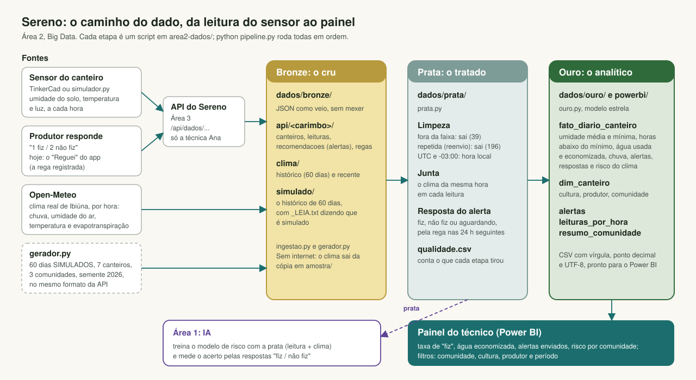
| Camada | O que tem | Quem escreve |
|---|---|---|
| Bronze (crua) | a resposta do Open-Meteo e da API como veio, sem mexer; o histórico simulado no mesmo formato da API | ingestao.py, gerador.py |
| Prata (tratada) | leituras limpas, em hora local, cada uma com o clima da mesma hora; alertas com a resposta; regas; e a contagem do que foi tirado | prata.py |
| Ouro (analítica, modelo estrela) | fato_diario_canteiro, dim_canteiro, alertas, leituras_por_hora e resumo_comunidade | ouro.py |
python pipeline.py roda as quatro etapas em cerca de 2 segundos: baixa o clima real do Open-Meteo, gera 60 dias de 7 canteiros em 3 comunidades (semente fixa) e, com --api, exporta da API do Sereno logado como a técnica. Na rodada padrão, 10.114 leituras entram na bronze e 235 saem na limpeza:
| Problema no dado cru | O que a prata faz | Na rodada padrão |
|---|---|---|
| valor fora da faixa (umidade 150% ou -1%) | tira a leitura (mesmas faixas da API) | 39 |
| leitura repetida (o sensor reenvia quando o sinal volta) | fica uma por canteiro e instante | 196 |
| dois fusos (UTC na API, -03:00 no sensor, hora local no Open-Meteo) | tudo vira hora local de São Paulo | todas |
| horário ilegível | tira a leitura | 0 |
Real: o clima, hora a hora, do Open-Meteo para Ibiúna. Simulado e declarado: a umidade do solo, os defeitos do sensor, os alertas e a resposta de cada produtor. Pessoas, canteiros e comunidades são fictícios.
Os CSVs da camada ouro, prontos para o Power BI, estão em area2-dados/powerbi/.
| Indicador | Visual | De onde vem |
|---|---|---|
| Taxa de "fiz" por comunidade | cartão e barras | alertas[resposta] |
| Água economizada | cartão (litros e %) e linha por dia | fato_diario_canteiro[litros_economizados] |
| Alertas enviados | colunas por dia | alertas |
| Risco por comunidade | matriz comunidade e dia | fato_diario_canteiro[risco_doenca] |
Filtros: comunidade, cultura e período.
O painel está em area2-dados/painel/Sereno.pbix (e, em texto, no projeto Sereno.pbip da mesma pasta). Ele carrega os CSVs da camada ouro com a localidade inglesa (ponto como decimal), liga as tabelas por canteiro_chave e por um calendário, para o filtro de período valer em todos os visuais.
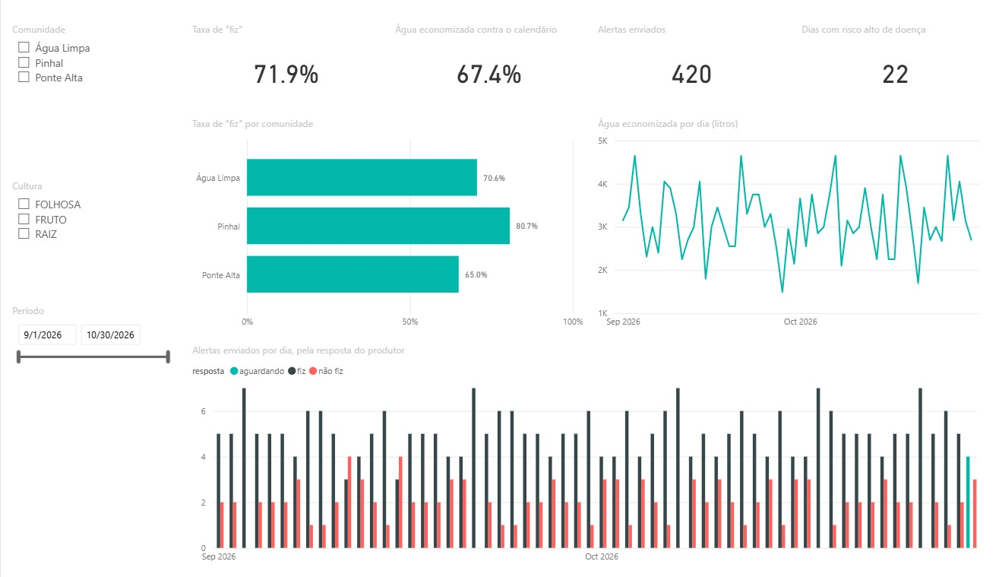
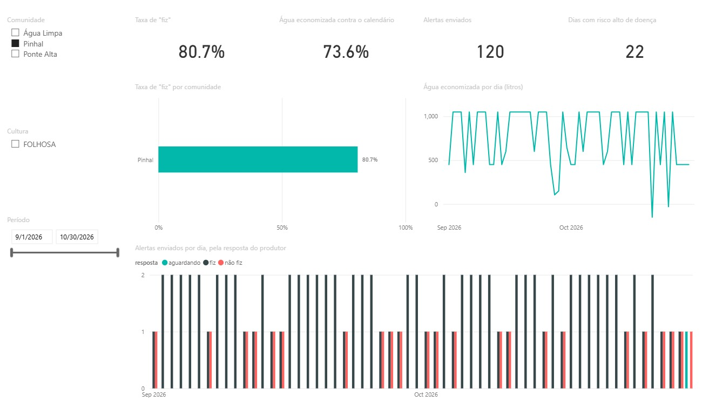
Alertas enviados = COUNTROWS ( alertas )
Respostas fiz = CALCULATE ( COUNTROWS ( alertas ), alertas[resposta] = "fiz" )
Taxa de fiz =
DIVIDE (
[Respostas fiz],
CALCULATE ( COUNTROWS ( alertas ), alertas[resposta] IN { "fiz", "não fiz" } )
)
Água economizada (L) = SUM ( fato_diario_canteiro[litros_economizados] )
Água economizada (%) =
DIVIDE ( [Água economizada (L)], SUM ( fato_diario_canteiro[litros_calendario] ) )
Horas abaixo do mínimo = SUM ( fato_diario_canteiro[horas_abaixo_do_minimo] )
Dias com risco alto de doença =
CALCULATE ( DISTINCTCOUNT ( fato_diario_canteiro[data] ), fato_diario_canteiro[risco_doenca] = "alto" )
Referência para conferir as medidas, na rodada padrão: taxa de "fiz" de 65% a 81% e água economizada de 60% a 74% por comunidade, num período chuvoso (491 mm em 60 dias).
Código em area3-mvp/: a API (Java 17, Spring Boot), o app (Expo, no navegador e no celular) e o IoT (Arduino no TinkerCad e o simulador dos sensores em Python).
Cinco telas em area3-mvp/app/src/telas/: Entrar, Meus canteiros, Hoje (a umidade ao vivo, o pedido de recomendação, a mensagem da IA e o "Reguei"), Histórico (a curva da umidade, a água em 7 dias e as regas) e Novo canteiro.
Os prints abaixo são o app rodando no navegador, ligado à API e à IA, com o simulador mandando leituras de solo seco do canteiro de alface. Estão na ordem do fluxo completo.
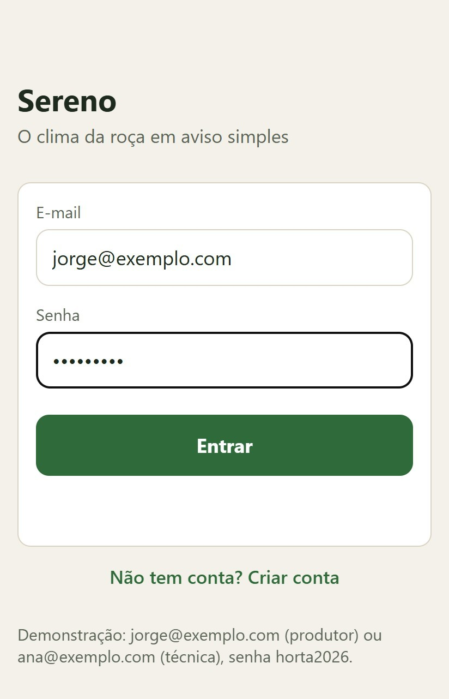
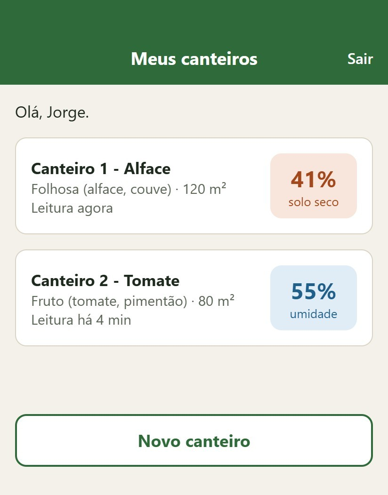
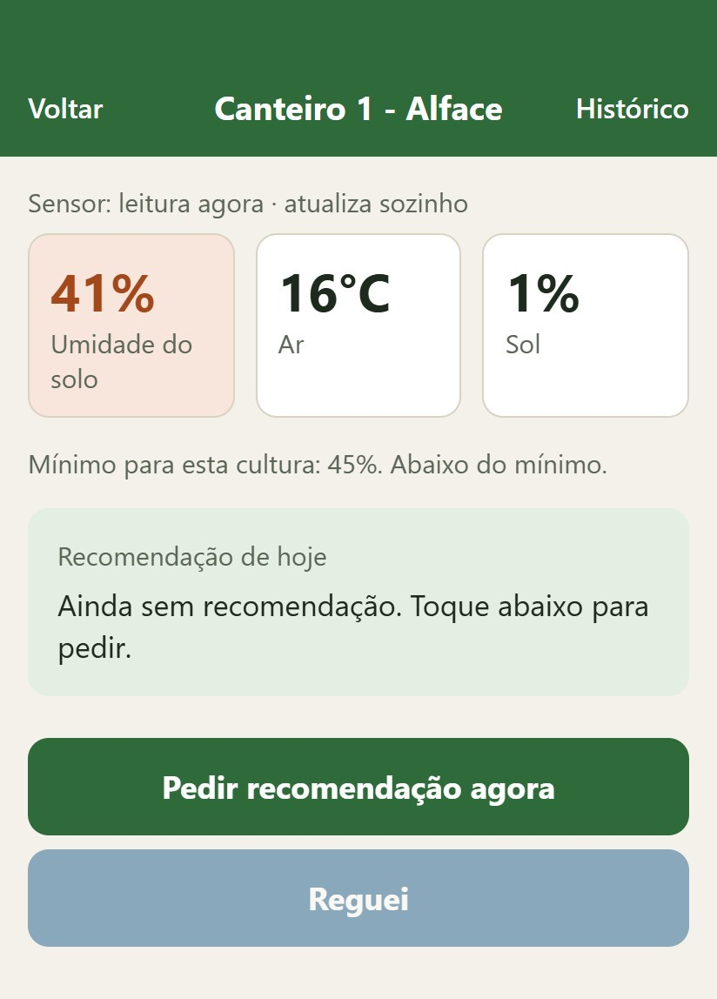
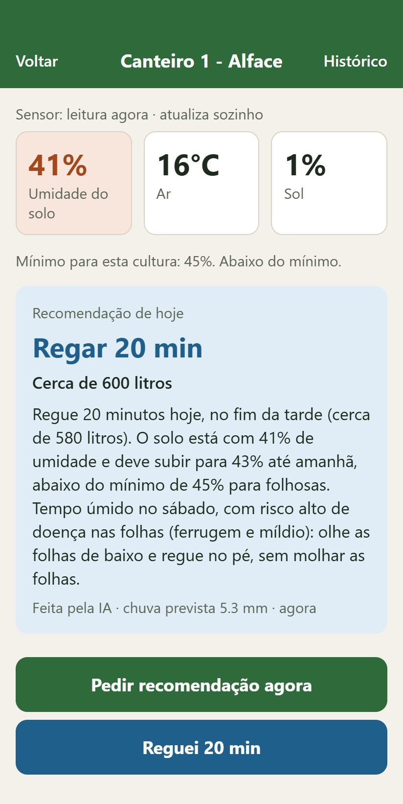
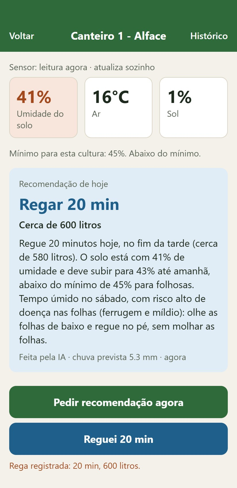
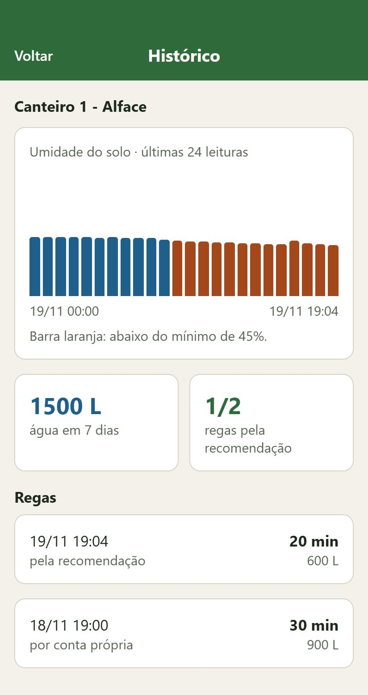
area3-mvp/iot/sensor_canteiro.ino: umidade do solo, temperatura do ar (TMP36) e luz (LDR), com um LED que acende quando o solo seca, mesmo sem internet. area3-mvp/iot/simulador.py imita o sensor e manda leituras à API, autenticado pela chave do canteiro, nos cenários normal, seco e chuva.
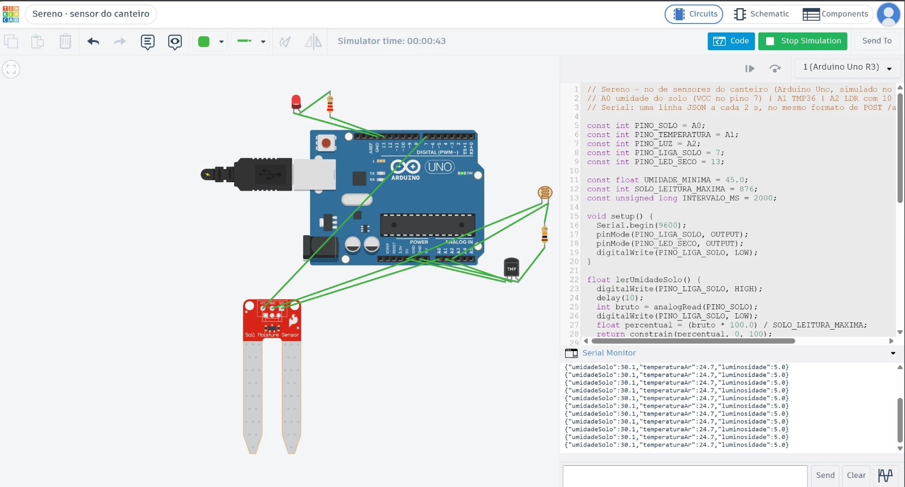
O fluxo: o sensor manda leituras secas, o produtor entra no app, pede a recomendação, a IA manda regar, ele toca em "Reguei", e o pipeline registra o alerta como "fiz". O mesmo fluxo roda sozinho no CI, contra a API no Docker:
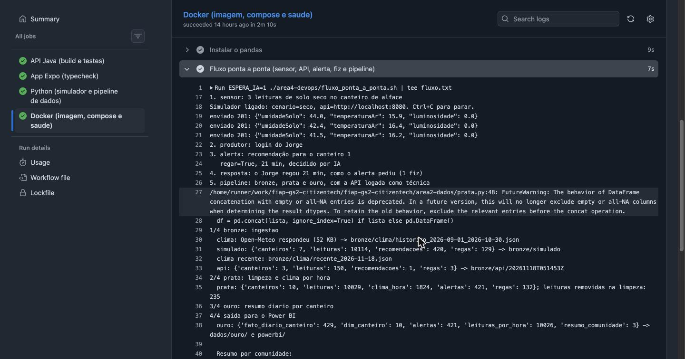
No app, o mesmo fluxo está nos prints 1 a 6 da seção de telas, rodando na máquina com a API, a IA e o simulador ligados, seguindo o README da Área 3.
O diagrama está na página do problema e em docs/arquitetura.svg.
Repositório https://github.com/Dsfr62/fiap-gs2-citizentech, uma pasta por área, cada uma com o próprio README de execução: area1-ia/, area2-dados/, area3-mvp/ (com api/, app/ e iot/), area4-devops/ e docs/.
.jar, a imagem final leva só o JRE e roda sem root); a da IA treina o modelo na montagem. O docker-compose.yml sobe o PostgreSQL 16, a IA e a API, cada um com teste de saúde./actuator/health responde UP sem login; o compose e o CI usam essa rota.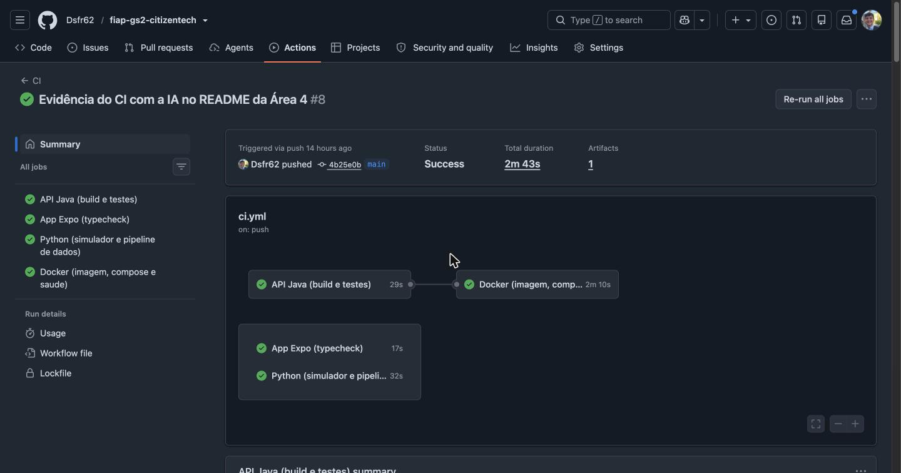
main: os quatro jobs verdes, em 2 min 43 s.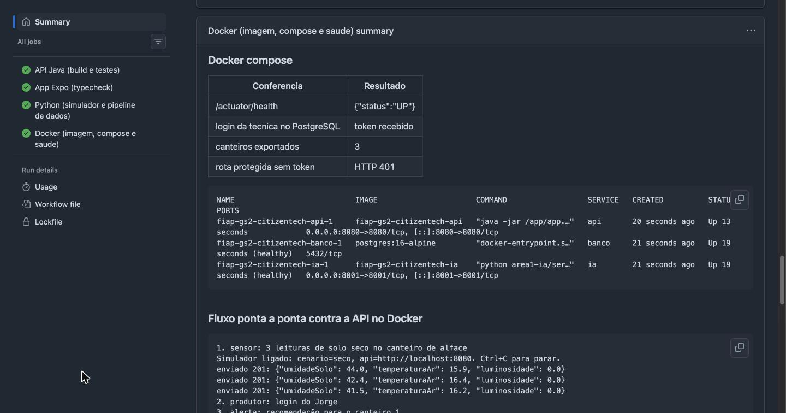
| Prática | Onde | O que faz |
|---|---|---|
| Login com token JWT | security/TokenService.java | assina com HMAC-256, expira em 8 h e confere a assinatura e o emissor a cada pedido |
| Senha com hash BCrypt | security/SegurancaConfig.java | a senha vira um hash com sal; nem quem lê o banco descobre a senha |
| Rotas fechadas por padrão e por papel | security/SegurancaConfig.java | só login, cadastro, sensor e saúde ficam abertos; a exportação só para o técnico (CT09, CT15) |
| Validação de entrada | dto/Dtos.java | faixa da umidade, e-mail, tamanho da senha e minutos; dado inválido volta 400 antes do banco (CT05, CT10) |
| Dados do produtor protegidos | service/CanteiroService.java | um produtor não vê o canteiro do outro; responde 404, sem revelar que existe (CT06, CT07) |
| Sensor autenticado por chave | service/LeituraService.java | cada canteiro tem uma chave aleatória; sem ela, a leitura é recusada (CT04) |
| Segredos fora do código | application.properties, docker-compose.yml, .gitignore | o segredo do JWT e a senha do banco vêm de variáveis de ambiente; o CI gera valores novos a cada execução |
| Contêiner sem root e banco fechado | Dockerfile, docker-compose.yml | a API roda como usuário comum; o banco não expõe porta para fora |
| Validação na IA | area1-ia/servico.py | faixas, cultura e coordenadas conferidas; corpo acima de 10 KB recusado; o log não guarda dado do canteiro (CT35) |
Arquivos Java em area3-mvp/api/src/main/java/br/com/fiap/gs2/; arquivo e linha de cada prática no README da Área 4.
37 casos, todos automáticos e rodando a cada push. Plano completo, com entrada e resultado esperado, em docs/plano-de-testes.md.
| CT | O que confere | Tipo | Job |
|---|---|---|---|
| 01 | login com a senha certa devolve token | integração | API |
| 02 | login com a senha errada devolve 401 | segurança | API |
| 03 | rota protegida sem token devolve 401 | segurança | API |
| 04 | sensor com chave inválida é recusado | segurança | API |
| 05 | leitura fora da faixa volta 400 | validação | API |
| 06 | produtor não vê o canteiro do outro (404) | segurança | API |
| 07 | a lista traz só os canteiros do produtor | segurança | API |
| 08 | fluxo completo na API: leitura seca, recomendação, rega | integração | API |
| 09 | exportação só para o técnico (200 e 403) | segurança | API |
| 10 | cadastro com senha curta volta 400 | validação | API |
| 11 | monitoramento: saúde responde UP sem login | monitoramento | API |
| 12 a 14 | regra básica: solo úmido, solo seco, dia quente | unidade | API |
| 15 | exportação sem a chave do sensor; produtor 403 | segurança | API |
| 16 | tipos do app sem erro (TypeScript) | estático | App |
| 17 | sintaxe dos scripts Python | estático | Python |
| 18, 19 | imagens montadas; compose sobe e fica saudável | build e sistema | Docker |
| 20 a 24 | pipeline: limpeza, fuso, "fiz / não fiz", horas e água, semente fixa | unidade | Python |
| 25 | pipeline pelo README gera os CSVs | sistema | Python |
| 26 | fumaça no PostgreSQL: login, exportação, 401 | sistema | Docker |
| 27 | ponta a ponta: sensor, API, IA, alerta, rega, pipeline | sistema | Docker |
| 28 a 33 | IA: seco, chuva, sem previsão, riscos, mensagem, modelo | unidade | Python |
| 34, 35 | IA: contrato com a API; pedido inválido volta 400 | integração e validação | Python |
| 36 | IA saudável no compose | monitoramento | Docker |
| 37 | antes e depois e exemplos pelo README | sistema | Python |
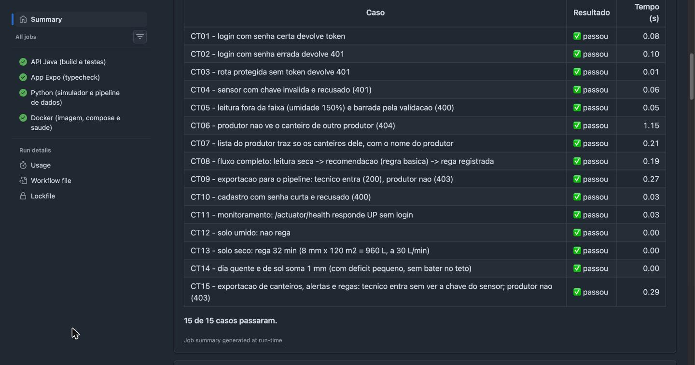
Execução verde na main: https://github.com/Dsfr62/fiap-gs2-citizentech/actions/runs/44242601185
A regra da GS2 permite usar IA para pesquisar, revisar e explicar, desde que o grupo entenda e revise tudo o que entrega. Esta parte não fala da IA do produto (essa é a Área 1).
| Ferramenta | Para quê | Onde | Revisado por |
|---|---|---|---|
| Claude Code (Anthropic, Claude Opus 5.5) | propor a arquitetura; primeira versão da API, do app, do sketch do Arduino, do simulador e dos testes; explicar cada parte; procurar as fontes do problema | Área 3 e docs/ | Eduardo Sávio |
| Claude Code (Anthropic, Claude Opus 5.5) | primeira versão do Docker, do compose, do CI, do plano de testes, do pipeline, dos testes do pipeline e das medidas DAX; explicar cada parte | Áreas 2 e 4 | Eduardo Sávio |
| Claude Code (Anthropic, Claude Opus 5.5) | primeira versão do treino, da decisão, dos riscos, da mensagem, do serviço, da avaliação, dos testes e do prompt; comparar modelos; explicar cada parte | Área 1 | Eduardo Sávio |
| Parte | Quem |
|---|---|
| Área 1, IA e automação | Eduardo Sávio Fonseca Resende |
| Área 2, Big Data e visualização | Marina da Conceição Pereira (painel); base do pipeline por Eduardo Sávio Fonseca Resende |
| Área 3, MVP, IoT e experiência digital | João Guilherme Mazur Ferreira e Marina da Conceição Pereira (telas, prints e TinkerCad); base da API e do app por Eduardo Sávio Fonseca Resende |
| Área 4, DevOps, segurança e qualidade | Eduardo Sávio Fonseca Resende |
| Vídeo pitch | Gustavo Vieira da Silva |
area3-mvp/api/pom.xml, area3-mvp/app/package.json, area1-ia/requirements.txt e area2-dados/requirements.txt, cada uma com a própria licença.